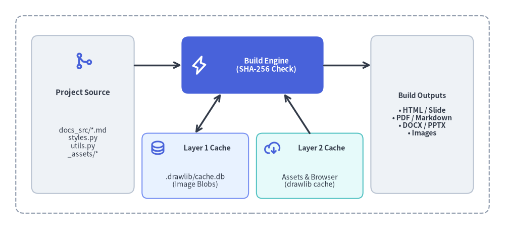
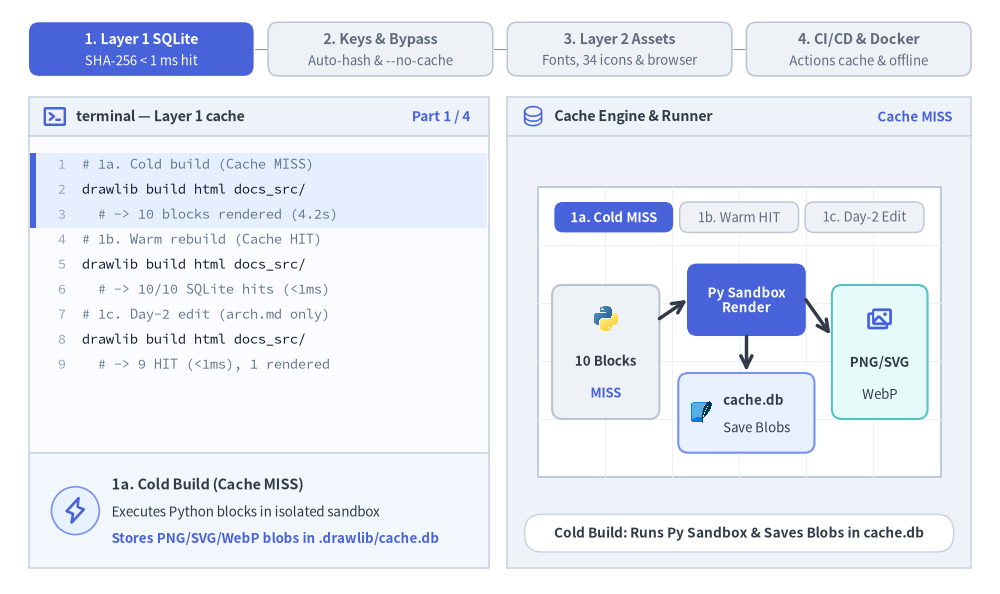
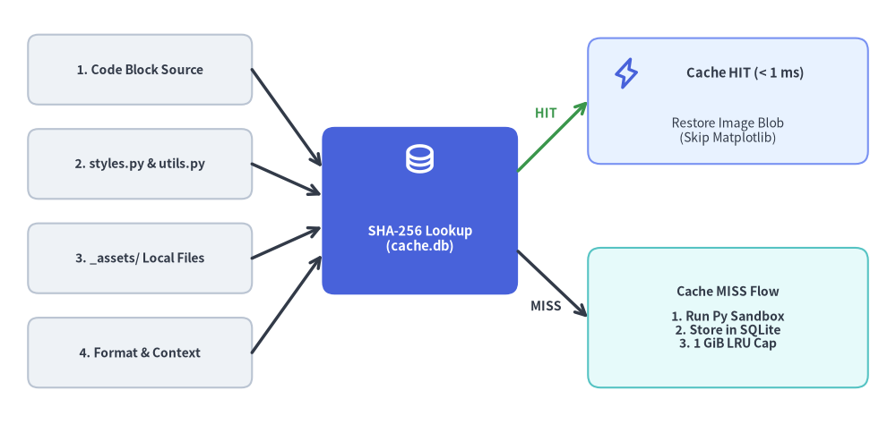

キャッシュ機構と CI/CD
Drawlib は 2 層構造のキャッシュアーキテクチャ を採用しており、ローカルでの反復ビルドを瞬時に完了させるとともに、CI/CD パイプラインを決定論的・高速・オフライン実行可能にします。

Source Code
from drawlib.canvas import save, setup
from drawlib.icons import phosphor
from drawlib.lines import line
from drawlib.shapes import rectangle
from drawlib.styles import Styles
from drawlib.text import text
setup(width=128, height=58)
# Outer pipeline boundary
rectangle((64, 29), width=120, height=50, style=Styles.MutedDashed.patch(shape_r=2.0))
# Left: Source inputs
rectangle((21, 29), width=26, height=40, style=Styles.Neutral.patch(shape_r=1.8))
phosphor.git_merge((21, 42.5), width=4.8, style=Styles.PrimaryBold)
text((21, 34.5), "Project Source", style=Styles.DarkBold.patch(text_size=10.8))
text((21, 22.0), "docs_src/*.md\nstyles.py\nutils.py\n_assets/*", style=Styles.Dark.patch(text_size=10.0))
# Center: Drawlib Compiler (Hero focal point)
rectangle((64, 41.5), width=36, height=14.5, style=Styles.PrimaryFlat.patch(shape_r=1.8))
phosphor.lightning((50.5, 41.5), width=4.8, style=Styles.WhiteBold)
text((67.5, 41.5), "Build Engine\n(SHA-256 Check)", style=Styles.WhiteBold.patch(text_size=10.5))
# Bottom Center: Two Cache Tiers
rectangle((49.5, 16.0), width=27, height=16.5, style=Styles.PrimaryNeutral.patch(shape_r=1.5))
phosphor.database((40.0, 20.5), width=4.2, style=Styles.PrimaryBold)
text((52.5, 20.5), "Layer 1 Cache", style=Styles.DarkBold.patch(text_size=10.2))
text((49.5, 12.2), ".drawlib/cache.db\n(Image Blobs)", style=Styles.Dark.patch(text_size=10.0))
rectangle((78.5, 16.0), width=27, height=16.5, style=Styles.SecondaryNeutral.patch(shape_r=1.5))
phosphor.cloud_arrow_down((69.0, 20.5), width=4.2, style=Styles.PrimaryBold)
text((81.5, 20.5), "Layer 2 Cache", style=Styles.DarkBold.patch(text_size=10.2))
text((78.5, 12.2), "Assets & Browser\n(drawlib cache)", style=Styles.Dark.patch(text_size=10.0))
# Right: Published Artifacts
rectangle(
(107, 29),
width=26,
height=40,
style=Styles.Neutral.patch(shape_r=1.8),
text="Build Outputs\n\n• HTML / Slide\n• PDF / Markdown\n• DOCX / PPTX\n• Images",
text_style=Styles.DarkBold.patch(text_size=10.0),
)
# Connectors
line((34, 41.5), (46, 41.5), arrow_head="->", style=Styles.DarkBold)
line((82, 41.5), (94, 41.5), arrow_head="->", style=Styles.DarkBold)
line((56, 34.25), (49.5, 24.25), arrow_head="<->", style=Styles.DarkBold)
line((72, 34.25), (78.5, 24.25), arrow_head="<-", style=Styles.DarkBold)
save()
- レイヤー 1 — 差分ビルドキャッシュ (
.drawlib/cache.db): レンダリング済みの図解バイナリを SHA-256 コンテンツハッシュでキャッシュし、変更のない図解を 1 ミリ秒未満で復元するプロジェクトローカルな SQLite データベースです。 - レイヤー 2 — グローバルアセット＆ブラウザキャッシュ (
drawlib cache): 外部フォントファミリー、ベクター／PNG アイコンパック、Natural Earth 地図データセット、および Playwright のヘッドレス Chromium バイナリ（chromium-headless-shell）を管理するパッケージキャッシュです。
1. インタラクティブな 2 層キャッシュ＆CI/CD ツアー
レイヤー 1 の SHA-256 SQLite キャッシュ、キャッシュキーの自動無効化、レイヤー 2 のオフラインアセット事前取得、そして GitHub Actions やエアギャップ Docker パイプラインがエンドツーエンドでどのように連携するかを確認しましょう。

Source Code
from __future__ import annotations
from drawlib.anim import Animation
from drawlib.canvas import save, setup
from drawlib.icons import client, cnative, data, devops, phosphor
from drawlib.icons import code as code_icons
from drawlib.lines import line
from drawlib.shapes import circle, rectangle
from drawlib.smartarts import SourceCode, SourceCodeStyles
from drawlib.styles import Styles
from drawlib.text import text
W, H = 138.0, 82.0
setup(width=W, height=H)
anim = Animation(fps=10.0, loop=0)
CODE_TEXT_SIZE = 10.0
PT_TO_CANVAS = W / 720.0
FONT_CANVAS = CODE_TEXT_SIZE * PT_TO_CANVAS
LINE_H = FONT_CANVAS * 1.8
PAD_Y = FONT_CANVAS * 1.2
CODE_STYLES = SourceCodeStyles.get("default", font_lang="en", text_size=CODE_TEXT_SIZE).patch(
box_style=Styles.Neutral.patch(shape_fill_color=(0, 0, 0, 0), shape_line_width=0),
)
PANE_HEADER = Styles.Neutral.patch(
shape_fill_color=(238, 243, 250),
shape_line_color=(203, 213, 225),
shape_line_width=1.2,
shape_r=0.0,
)
EDITOR_BODY = Styles.Neutral.patch(
shape_fill_color=(250, 252, 255),
shape_line_color=(203, 213, 225),
shape_line_width=1.2,
shape_r=0.0,
)
TAKEAWAY_BODY = Styles.Neutral.patch(
shape_fill_color=(242, 246, 253),
shape_line_color=(203, 213, 225),
shape_line_width=1.2,
shape_r=0.0,
)
STUDIO_BODY = Styles.Neutral.patch(
shape_fill_color=(239, 243, 249),
shape_line_color=(203, 213, 225),
shape_line_width=1.2,
shape_r=0.0,
)
PART_ITEMS = [
("1. Layer 1 SQLite", "SHA-256 < 1 ms hit"),
("2. Keys & Bypass", "Auto-hash & --no-cache"),
("3. Layer 2 Assets", "Fonts, 34 icons & browser"),
("4. CI/CD & Docker", "Actions cache & offline"),
]
def draw_step_bar(active_part: int) -> None:
"""Draw top 4-part progress bar (active_part is 1..4)."""
pill_w = 31.0
pill_h = 7.4
gap = 2.0
start_x = 4.0 + pill_w / 2.0
cy = 75.2
for idx, (label, sublabel) in enumerate(PART_ITEMS, start=1):
cx = start_x + (idx - 1) * (pill_w + gap)
if idx > 1:
prev_cx = cx - (pill_w + gap)
line(
(prev_cx + pill_w / 2.0 + 0.2, cy),
(cx - pill_w / 2.0 - 0.2, cy),
style=Styles.PrimaryBold if idx <= active_part else Styles.MutedThin,
)
if idx == active_part:
st = Styles.PrimaryFlat.patch(shape_r=1.4)
tst = Styles.WhiteBold.patch(text_size=10.3)
sub_tst = Styles.White.patch(text_size=9.5)
elif idx < active_part:
st = Styles.PrimaryNeutral.patch(shape_r=1.4, shape_line_width=1.1)
tst = Styles.PrimaryBold.patch(text_size=10.3)
sub_tst = Styles.Primary.patch(text_size=9.5)
else:
st = Styles.Neutral.patch(shape_r=1.4, shape_line_width=1.1)
tst = Styles.MutedBold.patch(text_size=10.3)
sub_tst = Styles.Muted.patch(text_size=9.5)
rectangle((cx, cy), width=pill_w, height=pill_h, style=st)
text((cx, cy + 1.35), label, style=tst)
text((cx, cy - 1.55), sublabel, style=sub_tst)
def draw_left_pane(
active_part: int,
file_title: str,
header_icon_kind: str,
code_lang: str,
code_lines: list[str],
hl_range: tuple[int, int],
takeaway_icon: object,
summary_title: str,
summary_line1: str,
summary_line2: str,
) -> None:
"""Draw left CLI / YAML / Dockerfile pane + bottom takeaway card."""
x0, w = 4.0, 63.5
cx = x0 + w / 2.0
top_y = 63.2
header_h = 5.4
editor_h = 43.8
takeaway_h = 15.8
rectangle((cx, top_y + header_h / 2.0), width=w, height=header_h, style=PANE_HEADER)
hy = top_y + header_h / 2.0
if header_icon_kind == "actions":
devops.github_actions((x0 + 3.6, hy), width=3.3, style=Styles.Neutral)
elif header_icon_kind == "docker":
cnative.docker((x0 + 3.6, hy), width=3.4, style=Styles.Neutral)
else:
phosphor.terminal_window((x0 + 3.6, hy), width=3.5, style=Styles.PrimaryBold)
text(
(x0 + 6.5, hy),
file_title,
style=Styles.DarkBold.patch(text_size=10.2, halign="left"),
)
text(
(x0 + w - 2.6, hy),
f"Part {active_part} / 4",
style=Styles.PrimaryBold.patch(text_size=9.8, halign="right"),
)
rectangle((cx, top_y - editor_h / 2.0), width=w, height=editor_h, style=EDITOR_BODY)
hl_start, hl_end = hl_range
hl_top = top_y - PAD_Y - hl_start * LINE_H
hl_bot = top_y - PAD_Y - (hl_end + 1) * LINE_H
hl_cy = (hl_top + hl_bot) / 2.0
hl_h = hl_top - hl_bot
rectangle(
(cx, hl_cy),
width=w - 0.6,
height=hl_h,
style=Styles.Neutral.patch(shape_fill_color=(229, 239, 255), shape_line_width=0),
)
rectangle(
(x0 + 0.55, hl_cy),
width=0.9,
height=hl_h,
style=Styles.PrimaryFlat.patch(shape_line_width=0),
)
SourceCode.draw(
xy=(x0, top_y),
width=w,
code="\n".join(code_lines),
styles=CODE_STYLES,
code_lang=code_lang,
show_linenum=True,
align="top_left",
)
take_cy = 3.6 + takeaway_h / 2.0
rectangle((cx, take_cy), width=w, height=takeaway_h, style=TAKEAWAY_BODY)
circle(
(x0 + 6.4, take_cy),
radius=3.3,
style=Styles.PrimaryNeutral.patch(shape_line_width=1.2),
)
takeaway_icon((x0 + 6.4, take_cy), width=3.8, style=Styles.PrimaryBold) # type: ignore[operator]
text(
(x0 + 11.4, take_cy + 3.6),
summary_title,
style=Styles.DarkBold.patch(text_size=10.4, halign="left"),
)
text(
(x0 + 11.4, take_cy - 0.2),
summary_line1,
style=Styles.Dark.patch(text_size=9.7, halign="left"),
)
text(
(x0 + 11.4, take_cy - 3.8),
summary_line2,
style=Styles.PrimaryBold.patch(text_size=9.6, halign="left"),
)
def draw_engine_studio(param_badge: str, footer_caption: str) -> tuple[float, float]:
"""Draw right cache engine & CI runner status shell and footer."""
x0, w = 70.0, 64.0
cx = x0 + w / 2.0
top_y = 63.2
header_h = 5.4
body_h = 59.6
rectangle((cx, top_y + header_h / 2.0), width=w, height=header_h, style=PANE_HEADER)
phosphor.database((x0 + 3.6, top_y + header_h / 2.0), width=3.4, style=Styles.Primary)
text(
(x0 + 6.5, top_y + header_h / 2.0),
"Cache Engine & Runner",
style=Styles.DarkBold.patch(text_size=10.2, halign="left"),
)
text(
(x0 + w - 2.6, top_y + header_h / 2.0),
param_badge,
style=Styles.PrimaryBold.patch(text_size=9.6, halign="right"),
)
rectangle((cx, 3.6 + body_h / 2.0), width=w, height=body_h, style=STUDIO_BODY)
sheet_cx, sheet_cy = cx, 36.2
sheet_w, sheet_h = 55.6, 40.0
sx0, sy0 = sheet_cx - sheet_w / 2.0, sheet_cy - sheet_h / 2.0
rectangle(
(sheet_cx, sheet_cy),
width=sheet_w,
height=sheet_h,
style=Styles.Neutral.patch(
shape_fill_color=(255, 255, 255),
shape_line_color=(180, 194, 214),
shape_line_width=1.2,
),
)
g_st = Styles.MutedThin.patch(line_color=(236, 241, 248), line_width=0.8)
for gx in range(1, 6):
vx = sx0 + gx * (sheet_w / 6.0)
line((vx, sy0), (vx, sy0 + sheet_h), style=g_st)
for gy in range(1, 5):
vy = sy0 + gy * (sheet_h / 5.0)
line((sx0, vy), (sx0 + sheet_w, vy), style=g_st)
rectangle(
(cx, 8.4),
width=59.2,
height=5.2,
style=Styles.Neutral.patch(
shape_fill_color=(255, 255, 255),
shape_line_color=(203, 213, 225),
shape_line_width=1.1,
shape_r=2.4,
),
text=footer_caption,
text_style=Styles.DarkBold.patch(text_size=9.8),
)
return sheet_cx, sheet_cy
def draw_sub_pills(scx: float, labels: list[str], active_idx: int) -> None:
"""Draw 3-step tracker pills near the top of the studio sheet."""
pw, ph, pgap = 16.4, 4.2, 0.9
p_start = scx - (3 * pw + 2 * pgap) / 2.0 + pw / 2.0
for idx, lbl in enumerate(labels):
px = p_start + idx * (pw + pgap)
if idx == active_idx:
pst = Styles.PrimaryFlat.patch(shape_r=1.2)
ptst = Styles.WhiteBold.patch(text_size=9.5)
elif idx < active_idx:
pst = Styles.PrimaryNeutral.patch(shape_r=1.2, shape_line_width=1.0)
ptst = Styles.PrimaryBold.patch(text_size=9.5)
else:
pst = Styles.Neutral.patch(shape_r=1.2, shape_line_width=1.0)
ptst = Styles.Muted.patch(text_size=9.5)
rectangle((px, 52.0), width=pw, height=ph, style=pst, text=lbl, text_style=ptst)
# =========================================================================
# Part 1: 1. Layer 1 SQLite (3 frames: 3.3 + 3.3 + 3.5 = 10.1s)
# =========================================================================
PART1_CODE = [
"# 1a. Cold build (Cache MISS)",
"drawlib build html docs_src/",
" # -> 10 blocks rendered (4.2s)",
"# 1b. Warm rebuild (Cache HIT)",
"drawlib build html docs_src/",
" # -> 10/10 SQLite hits (<1ms)",
"# 1c. Day-2 edit (arch.md only)",
"drawlib build html docs_src/",
" # -> 9 HIT (<1ms), 1 rendered",
]
PART1_STATES = [
(
"1a",
3.3,
(0, 2),
"Cache MISS",
"Cold Build: Runs Py Sandbox & Saves Blobs in cache.db",
"1a. Cold Build (Cache MISS)",
"Executes Python blocks in isolated sandbox",
"Stores PNG/SVG/WebP blobs in .drawlib/cache.db",
),
(
"1b",
3.3,
(3, 5),
"< 1 ms HIT",
"Warm Build: SHA-256 Matches -> Restores in < 1 ms",
"1b. Sub-Millisecond Cache HIT",
"SHA-256 matches (code + styles + utils + assets)",
"Skips Matplotlib completely -> < 1 ms restore",
),
(
"1c",
3.5,
(6, 8),
"9 HIT / 1 Run",
"Day-2 Edit: 9 Blocks Hit SQLite, Only 1 Re-Renders",
"1c. Selective Day-2 Rebuilds",
"9 unchanged blocks restore in < 1 ms each",
"Only the 1 edited diagram runs Python",
),
]
for p1_idx, (mode, dur, hl_rng, badge, foot, s_t, s_1, s_2) in enumerate(PART1_STATES):
with anim.frame(duration=dur):
draw_step_bar(1)
draw_left_pane(1, "terminal — Layer 1 cache", "cli", "bash", PART1_CODE, hl_rng, phosphor.lightning, s_t, s_1, s_2)
scx, _ = draw_engine_studio(badge, foot)
draw_sub_pills(scx, ["1a. Cold MISS", "1b. Warm HIT", "1c. Day-2 Edit"], p1_idx)
if mode == "1a":
rectangle((83.6, 33.4), width=14.8, height=18.5, style=Styles.Neutral.patch(shape_r=1.4))
code_icons.python((83.6, 38.0), width=3.8, style=Styles.Neutral)
text((83.6, 32.2), "10 Blocks", style=Styles.DarkBold.patch(text_size=9.6))
text((83.6, 27.8), "MISS", style=Styles.PrimaryBold.patch(text_size=9.5))
line((91.0, 38.0), (94.8, 40.6), arrow_head="->", style=Styles.DarkBold)
rectangle(
(103.0, 40.6),
width=16.4,
height=10.0,
style=Styles.PrimaryFlat.patch(shape_r=1.4),
text="Py Sandbox\nRender",
text_style=Styles.WhiteBold.patch(text_size=9.6),
)
line((103.0, 35.6), (103.0, 30.8), arrow_head="->", style=Styles.DarkBold)
rectangle((103.0, 25.0), width=18.8, height=11.0, style=Styles.PrimaryNeutral.patch(shape_r=1.4))
data.sqlite((96.8, 25.0), width=3.5, style=Styles.Neutral)
text((99.8, 26.8), "cache.db", style=Styles.DarkBold.patch(text_size=9.6, halign="left"))
text((99.8, 23.0), "Save Blobs", style=Styles.Dark.patch(text_size=9.5, halign="left"))
line((111.2, 40.6), (114.6, 35.8), arrow_head="->", style=Styles.DarkBold)
rectangle((121.4, 33.4), width=13.2, height=18.5, style=Styles.SecondaryNeutral.patch(shape_r=1.4))
phosphor.images((121.4, 38.0), width=4.0, style=Styles.PrimaryBold)
text((121.4, 32.0), "PNG/SVG", style=Styles.DarkBold.patch(text_size=9.6))
text((121.4, 27.6), "WebP", style=Styles.Dark.patch(text_size=9.5))
elif mode == "1b":
rectangle(
(scx, 43.2),
width=50.0,
height=6.2,
style=Styles.MutedDashed.patch(shape_r=1.3),
text="Python & Matplotlib Skipped (0 Executions)",
text_style=Styles.MutedBold.patch(text_size=9.6),
)
rectangle((84.2, 28.4), width=15.6, height=15.0, style=Styles.Neutral.patch(shape_r=1.4))
text((84.2, 31.2), "SHA-256", style=Styles.DarkBold.patch(text_size=9.8))
text((84.2, 25.8), "Matched!", style=Styles.PrimaryBold.patch(text_size=9.5))
line((92.0, 28.4), (94.8, 28.4), arrow_head="->", style=Styles.SuccessBold)
rectangle((103.6, 28.4), width=17.4, height=15.0, style=Styles.PrimaryFlat.patch(shape_r=1.4))
phosphor.lightning((103.6, 32.4), width=4.0, style=Styles.WhiteBold)
text((103.6, 25.2), "cache.db\n< 1 ms HIT", style=Styles.WhiteBold.patch(text_size=9.6))
line((112.3, 28.4), (115.0, 28.4), arrow_head="->", style=Styles.SuccessBold)
rectangle((121.4, 28.4), width=12.6, height=15.0, style=Styles.SecondaryNeutral.patch(shape_r=1.4))
text((121.4, 31.2), "10 / 10", style=Styles.DarkBold.patch(text_size=9.8))
text((121.4, 25.8), "Instant", style=Styles.PrimaryBold.patch(text_size=9.5))
else:
for idx_b in range(10):
col = idx_b % 5
row = idx_b // 5
bx = 82.0 + col * 10.0
by = 42.4 if row == 0 else 33.4
is_edited = idx_b == 3
bst = Styles.PrimaryFlat if is_edited else Styles.PrimaryNeutral
btst = Styles.WhiteBold if is_edited else Styles.DarkBold
blbl = f"#{idx_b + 1}\nRUN" if is_edited else f"#{idx_b + 1}\nHIT"
rectangle(
(bx, by),
width=8.8,
height=7.2,
style=bst.patch(shape_r=1.1),
text=blbl,
text_style=btst.patch(text_size=9.5),
)
rectangle(
(scx, 22.0),
width=50.0,
height=6.6,
style=Styles.SecondaryNeutral.patch(shape_r=1.3),
text="9 Blocks Hit SQLite (< 1 ms) • 1 Block Re-Rendered",
text_style=Styles.DarkBold.patch(text_size=9.6),
)
# =========================================================================
# Part 2: 2. Keys & Bypass (3 frames: 3.3 + 3.3 + 3.5 = 10.1s)
# =========================================================================
PART2_CODE = [
"# 2a. Auto-hashed inputs:",
"# code + styles.py + utils.py",
"# + _assets/* + drawlib ver",
"# 2b. Force fresh render",
"drawlib build html docs_src/ \\",
" --no-cache",
"drawlib cache clear --images",
"# 2c. Auto Git safety & LRU",
"# .drawlib/.gitignore (*)",
"# 1 GiB cap -> evicts old 50%",
]
PART2_STATES = [
(
"2a",
3.3,
(0, 2),
"SHA-256 Key",
"Auto-Invalidates on styles.py, utils.py, _assets/ or Ver",
"2a. Deterministic SHA-256 Digest",
"Hashes code, styles.py, utils.py & _assets/*",
"Also invalidates on drawlib/matplotlib upgrade",
),
(
"2b",
3.3,
(3, 6),
"Bypass Cache",
"Use --no-cache or clear --images for External Helpers",
"2b. Manual Cache Bypass",
"External helper modules aren't auto-hashed",
"Pass --no-cache or run cache clear --images",
),
(
"2c",
3.5,
(7, 9),
"1 GiB LRU",
"Auto .drawlib/.gitignore + 1 GiB LRU Eviction Cap",
"2c. Zero-Maintenance Safeguards",
"Auto-creates .drawlib/.gitignore (*) & TAG",
"Evicts oldest 50% when cache exceeds 1 GiB",
),
]
for p2_idx, (mode, dur, hl_rng, badge, foot, s_t, s_1, s_2) in enumerate(PART2_STATES):
with anim.frame(duration=dur):
draw_step_bar(2)
draw_left_pane(2, "terminal — keys & bypass", "cli", "bash", PART2_CODE, hl_rng, phosphor.lock_key, s_t, s_1, s_2)
scx, _ = draw_engine_studio(badge, foot)
draw_sub_pills(scx, ["2a. Auto Hash", "2b. --no-cache", "2c. 1 GiB LRU"], p2_idx)
if mode == "2a":
key_inputs = [
(44.2, "Code + Format", Styles.Neutral),
(37.0, "styles.py & utils.py", Styles.PrimaryNeutral),
(29.8, "_assets/* Files", Styles.Neutral),
(22.6, "drawlib Version", Styles.SecondaryNeutral),
]
for ky, klbl, kst in key_inputs:
rectangle(
(88.2, ky),
width=23.2,
height=5.6,
style=kst.patch(shape_r=1.1),
text=klbl,
text_style=Styles.DarkBold.patch(text_size=9.5),
)
line((99.8, ky), (105.8, 33.4), arrow_head="->", style=Styles.DarkBold)
rectangle((116.8, 33.4), width=21.0, height=20.0, style=Styles.PrimaryFlat.patch(shape_r=1.5))
phosphor.arrows_clockwise((116.8, 38.6), width=4.2, style=Styles.WhiteBold)
text(
(116.8, 29.8),
"Any Change\n-> New Hash\n-> Re-Render",
style=Styles.WhiteBold.patch(text_size=9.5),
)
elif mode == "2b":
rectangle(
(scx, 42.6),
width=50.0,
height=7.0,
style=Styles.Neutral.patch(shape_r=1.3),
)
code_icons.python((80.2, 42.6), width=3.4, style=Styles.Neutral)
text(
(83.4, 42.6),
"Edited external my_helper.py",
style=Styles.DarkBold.patch(text_size=9.8, halign="left"),
)
line((89.4, 39.1), (89.4, 35.0), arrow_head="->", style=Styles.DarkBold)
line((114.6, 39.1), (114.6, 35.0), arrow_head="->", style=Styles.DarkBold)
rectangle((89.4, 26.8), width=23.8, height=15.4, style=Styles.PrimaryNeutral.patch(shape_r=1.4))
phosphor.arrows_clockwise((89.4, 31.0), width=4.0, style=Styles.PrimaryBold)
text((89.4, 25.4), "--no-cache", style=Styles.DarkBold.patch(text_size=9.8))
text((89.4, 21.4), "1-run fresh build", style=Styles.Dark.patch(text_size=9.5))
rectangle((114.6, 26.8), width=23.8, height=15.4, style=Styles.SecondaryNeutral.patch(shape_r=1.4))
phosphor.broom((114.6, 31.0), width=4.0, style=Styles.PrimaryBold)
text((114.6, 25.4), "clear --images", style=Styles.DarkBold.patch(text_size=9.8))
text((114.6, 21.4), "Purge cache.db", style=Styles.Dark.patch(text_size=9.5))
else:
rectangle((scx, 41.2), width=50.0, height=11.0, style=Styles.Neutral.patch(shape_r=1.4))
devops.git((80.8, 41.2), width=3.8, style=Styles.Neutral)
text((84.4, 43.2), ".drawlib/.gitignore (*)", style=Styles.DarkBold.patch(text_size=9.9, halign="left"))
text((84.4, 39.0), "+ CACHEDIR.TAG (Git-safe)", style=Styles.Dark.patch(text_size=9.5, halign="left"))
rectangle((scx, 25.8), width=50.0, height=13.2, style=Styles.PrimaryNeutral.patch(shape_r=1.4))
data.sqlite((80.8, 28.4), width=3.6, style=Styles.Neutral)
text((84.4, 29.4), "1 GiB Size Cap (Auto LRU)", style=Styles.DarkBold.patch(text_size=9.9, halign="left"))
rectangle((102.0, 22.4), width=43.0, height=3.8, style=Styles.White.patch(shape_r=1.0))
rectangle((91.2, 22.4), width=21.5, height=3.8, style=Styles.PrimaryFlat.patch(shape_r=1.0))
text((114.5, 22.4), "Evicts old 50%", style=Styles.PrimaryBold.patch(text_size=9.5))
# =========================================================================
# Part 3: 3. Layer 2 Assets (3 frames: 3.3 + 3.3 + 3.5 = 10.1s)
# =========================================================================
PART3_CODE = [
"# 3a. Audit local asset packages",
"uv run drawlib cache list",
"",
"# 3b. Pre-warm all assets + shell",
"uv run drawlib cache download \\",
" --all",
"",
"# 3c. Run 100% offline builds",
"uv run drawlib build pdf doc_src/",
"uv run drawlib build pptx deck/",
]
PART3_STATES = [
(
"3a",
3.3,
(0, 1),
"Asset Audit",
"Audits Local Status of Fonts, 34 Icon Packs & Maps",
"3a. Inspect Layer 2 Packages",
"Lists font_*, 34 icon_* & map_* archives",
"Keeps core PyPI wheel lightweight & fast",
),
(
"3b",
3.3,
(3, 5),
"download --all",
"Pre-Warms Fonts, Icons, Natural Earth Maps & Chromium",
"3b. One-Command Cache Warming",
"Downloads all release archives in advance",
"Also installs headless Chromium shell",
),
(
"3c",
3.5,
(7, 9),
"100% Offline",
"Zero Runtime Network Fetches During Offline Builds",
"3c. Deterministic Offline Execution",
"All fonts, icons, maps & browser run locally",
"Zero runtime GitHub or CDN HTTP requests",
),
]
for p3_idx, (mode, dur, hl_rng, badge, foot, s_t, s_1, s_2) in enumerate(PART3_STATES):
with anim.frame(duration=dur):
draw_step_bar(3)
draw_left_pane(3, "terminal — Layer 2 cache", "cli", "bash", PART3_CODE, hl_rng, phosphor.package, s_t, s_1, s_2)
scx, _ = draw_engine_studio(badge, foot)
draw_sub_pills(scx, ["3a. cache list", "3b. download", "3c. 100% Offline"], p3_idx)
if mode == "3a":
pkg_rows = [
(43.2, "font_* (Roboto, Noto CJK)", "Cached", Styles.Neutral),
(36.4, "icon_* (Phosphor, Cloud, 2D)", "34 pkgs", Styles.PrimaryNeutral),
(29.6, "map_* (Natural Earth)", "3 pkgs", Styles.Neutral),
(22.8, "chromium-headless-shell", "Ready", Styles.SecondaryNeutral),
]
for py_r, pname, pstat, pst in pkg_rows:
rectangle((scx, py_r), width=50.0, height=5.5, style=pst.patch(shape_r=1.1))
text((79.5, py_r), pname, style=Styles.DarkBold.patch(text_size=9.5, halign="left"))
text((124.8, py_r), pstat, style=Styles.PrimaryBold.patch(text_size=9.5, halign="right"))
elif mode == "3b":
rectangle((scx, 43.6), width=49.0, height=6.4, style=Styles.PrimaryFlat.patch(shape_r=1.3))
phosphor.cloud_arrow_down((81.5, 43.6), width=3.8, style=Styles.WhiteBold)
text(
(84.8, 43.6),
"GitHub Releases + Playwright",
style=Styles.WhiteBold.patch(text_size=9.8, halign="left"),
)
line((89.2, 40.4), (89.2, 37.6), arrow_head="->", style=Styles.DarkBold)
line((114.8, 40.4), (114.8, 37.6), arrow_head="->", style=Styles.DarkBold)
targets = [
(89.2, 33.4, "Fonts (font_*)", Styles.Neutral),
(114.8, 33.4, "34 Icon Suites", Styles.PrimaryNeutral),
(89.2, 23.4, "GeoMap Vectors", Styles.Neutral),
(114.8, 23.4, "Chromium Shell", Styles.SecondaryNeutral),
]
for tx, ty, tlbl, tst in targets:
rectangle(
(tx, ty),
width=23.8,
height=8.0,
style=tst.patch(shape_r=1.2),
text=tlbl,
text_style=Styles.DarkBold.patch(text_size=9.6),
)
else:
rectangle((scx, 43.4), width=50.0, height=6.2, style=Styles.Neutral.patch(shape_r=1.3))
phosphor.shield_check((80.2, 43.4), width=3.8, style=Styles.PrimaryBold)
text(
(83.4, 43.4),
"Network Disabled • 0 HTTP Fetches",
style=Styles.DarkBold.patch(text_size=9.7, halign="left"),
)
rectangle((89.0, 29.0), width=23.6, height=17.5, style=Styles.PrimaryNeutral.patch(shape_r=1.4))
phosphor.package((89.0, 33.8), width=4.0, style=Styles.PrimaryBold)
text((89.0, 28.0), "_cached_assets/", style=Styles.DarkBold.patch(text_size=9.5))
text((89.0, 23.8), "+ Chromium", style=Styles.Dark.patch(text_size=9.5))
line((100.8, 29.0), (104.2, 29.0), arrow_head="->", style=Styles.DarkBold)
rectangle((115.6, 29.0), width=22.4, height=17.5, style=Styles.SecondaryNeutral.patch(shape_r=1.4))
phosphor.check_circle((115.6, 33.8), width=4.0, style=Styles.PrimaryBold)
text((115.6, 28.0), "HTML / PDF", style=Styles.DarkBold.patch(text_size=9.6))
text((115.6, 23.8), "DOCX / PPTX", style=Styles.DarkBold.patch(text_size=9.6))
# =========================================================================
# Part 4: 4. CI/CD & Docker (3 frames: 3.3 + 3.3 + 3.5 = 10.1s)
# =========================================================================
PART4_YAML = [
"- uses: actions/cache@v4",
" with:",
" path: |",
" .drawlib/",
" ~/.cache/drawlib/",
" ~/.cache/ms-playwright/",
"- run: |",
" drawlib build html docs_src/",
" drawlib build pdf doc_src/",
" drawlib serve docs_html/ \\",
" --check",
]
PART4_DOCKER = [
"FROM python:3.12-slim",
"WORKDIR /workspace",
"",
"# Install OS libs & warm caches",
"RUN pip install drawlib \\",
" && playwright install-deps \\",
" chromium \\",
" && drawlib cache download --all",
"",
"# Runtime: 100% air-gapped!",
]
PART4_STATES = [
(
"4a",
3.3,
".github/workflows/ci.yml",
"actions",
"yaml",
PART4_YAML,
(0, 5),
"actions/cache",
"Restores .drawlib/, ~/.cache/drawlib/ & ms-playwright/",
"4a. GitHub Actions Cache Restore",
"Persists SQLite blobs & asset packages",
"Keyed by runner OS & uv.lock hash",
),
(
"4b",
3.3,
".github/workflows/ci.yml",
"actions",
"yaml",
PART4_YAML,
(6, 10),
"CI Link Gate",
"Builds HTML/PDF/DOCX & Runs serve --check Gate",
"4b. Automated CI Quality Gate",
"Compiles site, vector PDF & Word docs",
"serve --check blocks any broken link",
),
(
"4c",
3.5,
"Dockerfile (air-gapped)",
"docker",
"dockerfile",
PART4_DOCKER,
(4, 7),
"Air-Gap Image",
"Air-Gapped Container Runs 100% Offline at Runtime",
"4c. Air-Gapped Linux Container",
"playwright install-deps adds OS shared libs",
"cache download --all bakes every asset",
),
]
for p4_idx, (mode, dur, ftitle, hicon, clang, clines, hl_rng, badge, foot, s_t, s_1, s_2) in enumerate(PART4_STATES):
with anim.frame(duration=dur):
draw_step_bar(4)
draw_left_pane(4, ftitle, hicon, clang, clines, hl_rng, phosphor.shield_check, s_t, s_1, s_2)
scx, _ = draw_engine_studio(badge, foot)
draw_sub_pills(scx, ["4a. CI Cache", "4b. Link Gate", "4c. Dockerfile"], p4_idx)
if mode == "4a":
rectangle((scx, 43.8), width=50.0, height=6.0, style=Styles.PrimaryNeutral.patch(shape_r=1.3))
devops.github_actions((80.2, 43.8), width=3.5, style=Styles.Neutral)
text(
(83.4, 43.8),
"actions/cache@v4 • uv.lock key",
style=Styles.DarkBold.patch(text_size=9.7, halign="left"),
)
dirs = [
(35.6, ".drawlib/", "Layer 1 SQLite", Styles.Neutral),
(28.8, "~/.cache/drawlib/", "Fonts, icons & maps", Styles.Neutral),
(22.0, "~/.cache/ms-playwright/", "Chromium shell", Styles.SecondaryNeutral),
]
for dy, dpath, ddesc, dst in dirs:
rectangle((scx, dy), width=50.0, height=5.5, style=dst.patch(shape_r=1.1))
text((79.4, dy), dpath, style=Styles.DarkBold.patch(text_size=9.5, halign="left"))
text((124.8, dy), ddesc, style=Styles.PrimaryBold.patch(text_size=9.5, halign="right"))
elif mode == "4b":
rectangle(
(scx, 43.2),
width=50.0,
height=6.8,
style=Styles.Neutral.patch(shape_r=1.3),
text="1. Build HTML + PDF (--toc) + DOCX",
text_style=Styles.DarkBold.patch(text_size=9.6),
)
line((scx, 39.8), (scx, 37.0), arrow_head="->", style=Styles.DarkBold)
rectangle(
(scx, 33.4),
width=50.0,
height=7.0,
style=Styles.PrimaryFlat.patch(shape_r=1.3),
text="2. drawlib serve docs_html/ --check",
text_style=Styles.WhiteBold.patch(text_size=9.6),
)
line((scx, 29.9), (scx, 27.1), arrow_head="->", style=Styles.SuccessBold)
rectangle((scx, 23.4), width=50.0, height=7.0, style=Styles.SecondaryNeutral.patch(shape_r=1.3))
phosphor.check_circle((80.6, 23.4), width=3.8, style=Styles.PrimaryBold)
text(
(83.8, 23.4),
"3. 0 Broken Links -> Deploy!",
style=Styles.DarkBold.patch(text_size=9.7, halign="left"),
)
else:
rectangle((scx, 32.8), width=50.4, height=28.2, style=Styles.PrimaryDashed.patch(shape_r=1.6))
cnative.docker((80.8, 43.4), width=3.6, style=Styles.Neutral)
text(
(84.2, 43.4),
"python:3.12-slim (Air-Gapped)",
style=Styles.DarkBold.patch(text_size=9.8, halign="left"),
)
layers = [
(37.4, "playwright install-deps chromium", Styles.Neutral),
(30.8, "drawlib cache download --all", Styles.PrimaryNeutral),
(24.0, "Runtime: --network=none (Offline)", Styles.SecondaryNeutral),
]
for ly, llbl, lst in layers:
rectangle(
(scx, ly),
width=46.4,
height=5.4,
style=lst.patch(shape_r=1.1),
text=llbl,
text_style=Styles.DarkBold.patch(text_size=9.5),
)
save()
2. レイヤー 1: SQLite 差分ビルドキャッシュ (.drawlib/cache.db)
drawlib build または drawlib show を実行すると、Drawlib は .drawlib/cache.db にローカル SQLite データベースを自動作成します（キャッシュバイナリが誤って Git にコミットされないよう、* を含む .drawlib/.gitignore と .drawlib/CACHEDIR.TAG も同時に自動生成されます）。
2.1. SHA-256 キャッシュキーに含まれる要素
埋め込み drawlib ブロックまたは単体の .py スクリプトを実行する前に、Drawlib は以下の要素全体に対する決定論的な SHA-256 ダイジェストを計算します。
- 描画コード本文: ブロックまたはスクリプト内の正確な Python コード文字列。
- プロジェクトの
styles.py&utils.py: 有効な--stylesおよび--utilsスクリプトのファイル内容全体。 - 参照されているローカルアセット: コード内で文字列リテラルとして参照されているローカルファイルの内容（Markdown ファイル、プロジェクトルート、または
_assets/からの相対パスで解決）。 - 実行コンテキスト: ソース／ターゲットパス、出力フォーマット（
png、webp、svg）、およびプレゼンテーションの総スライド枚数（total_slides）。
ダイジェストが .drawlib/cache.db 内のエントリと一致した場合、Drawlib は Python や Matplotlib を一切起動することなく、レンダリング済み画像バイナリを 1 ミリ秒未満 で SQLite から直接復元します。

Source Code
from drawlib.canvas import save, setup
from drawlib.icons import phosphor
from drawlib.lines import line
from drawlib.shapes import rectangle
from drawlib.styles import Styles
from drawlib.text import text
setup(width=128, height=62)
# Left Stack: 4 Input Cards
inputs = [
(52.0, "1. Code Block Source"),
(38.5, "2. styles.py & utils.py"),
(25.0, "3. _assets/ Local Files"),
(11.5, "4. Format & Context"),
]
for iy, ilabel in inputs:
rectangle(
(20, iy),
width=32,
height=10.0,
style=Styles.Neutral.patch(shape_r=1.5),
text=ilabel,
text_style=Styles.DarkBold.patch(text_size=10.0),
)
# Center Focal Card: SHA-256 Digest Lookup
rectangle((60, 31.8), width=28, height=24, style=Styles.PrimaryFlat.patch(shape_r=1.8))
phosphor.database((60, 39.2), width=4.8, style=Styles.WhiteBold)
text((60, 27.8), "SHA-256 Lookup\n(cache.db)", style=Styles.WhiteBold.patch(text_size=10.5))
# Converging arrows from 4 inputs to SHA-256 Digest Lookup
line((36, 52.0), (46, 38.0), arrow_head="->", style=Styles.DarkBold)
line((36, 38.5), (46, 34.0), arrow_head="->", style=Styles.DarkBold)
line((36, 25.0), (46, 29.5), arrow_head="->", style=Styles.DarkBold)
line((36, 11.5), (46, 25.5), arrow_head="->", style=Styles.DarkBold)
# Top Branch: Cache HIT
line((74, 37.5), (84, 47.5), arrow_head="->", style=Styles.SuccessBold)
text((78.0, 45.8), "HIT", style=Styles.SuccessBold.patch(text_size=10.2))
rectangle((104, 47.5), width=40, height=18, style=Styles.PrimaryNeutral.patch(shape_r=1.8))
phosphor.lightning((89.5, 51.5), width=4.6, style=Styles.PrimaryBold)
text((106.5, 51.5), "Cache HIT (< 1 ms)", style=Styles.DarkBold.patch(text_size=10.5))
text((104, 43.2), "Restore Image Blob\n(Skip Matplotlib)", style=Styles.Dark.patch(text_size=10.0))
# Bottom Branch: Cache MISS
line((74, 26.0), (84, 16.5), arrow_head="->", style=Styles.DarkBold)
text((78.0, 18.2), "MISS", style=Styles.DarkBold.patch(text_size=10.2))
rectangle(
(104, 16.5),
width=40,
height=20,
style=Styles.SecondaryNeutral.patch(shape_r=1.8),
text="Cache MISS Flow\n\n1. Run Py Sandbox\n2. Store in SQLite\n3. 1 GiB LRU Cap",
text_style=Styles.DarkBold.patch(text_size=10.0),
)
save()
2.2. 自動キャッシュメンテナンスと環境変数
- ライブラリバージョン更新時の自動無効化: インストールされている
drawlibまたはmatplotlibのバージョンが変更されると、キャッシュテーブルは自動的に無効化されます。 - 1 GiB の容量上限: キャッシュされた画像バイナリの合計が
1 GiBを超えると、古い方から 50% のエントリが自動的に削除（LRU 方式）されます。 - カスタムキャッシュパス: CI/CD ランナーでは、
DRAWLIB_CACHE_DB=/path/to/cache.dbまたはDRAWLIB_CACHE_DIR=/path/to/dir環境変数によって SQLite データベースの保存先を上書きできます。
2.3. レイヤー 1 キャッシュをバイパスまたはクリアすべきケース
描画スクリプトが styles.py や utils.py 以外 の外部カスタム Python モジュールをインポートしている場合、その外部モジュールを編集してもブロックの SHA-256 ハッシュは自動では変化しません。その場合は --no-cache または drawlib cache clear --images を使用して強制的に再レンダリングを実行してください。
# Force full re-rendering for a single build or preview command:
uv run drawlib build html docs_src/ -o docs_html/ --no-cache
uv run drawlib show docs_src/index.md arch.png -g -o .drawlib/scratch/preview.png --no-cache
# Or purge all cached diagram binaries from .drawlib/cache.db:
uv run drawlib cache clear --images
3. レイヤー 2: グローバルアセット＆ブラウザキャッシュ (drawlib cache) とルールキャッシュ
コアの drawlib PyPI ホイールを軽量に保つため、外部バイナリアセットは公式 GitHub Releases 上に決定論的なアーカイブとしてパッケージ化され、Playwright のヘッドレスブラウザバイナリとともに drawlib/_cached_assets/ 内にローカルキャッシュされます。
- フォントパッケージ (
font_*): 欧文・技術系フォントファミリー（font_roboto、font_roboto_condensed、font_roboto_mono、font_roboto_serif、font_roboto_slab、font_mono_source_code_pro、font_mono_courier、font_sans_*、font_serif_*）および多言語 CJK／地域別フォントファミリー（font_cjk_japanese_noto_sans、font_japanese_noto_sans、font_japanese_mplus_1p、font_chinese_simplified_noto_sans、font_chinese_traditional_noto_sans、font_korean_noto_sans、font_arabic_noto_sans、font_thai_noto_sans、font_brahmic_*）。 - アイコンパッケージ (
icon_*— 全 34 パッケージ): ベクターフォントアイコン（icon_phosphor）、公式クラウドプロバイダアイコン（icon_gcp、icon_aws、icon_azure）、15 種類の公式ドメインブランドパック（icon_ai、icon_business、icon_client、icon_cloud、icon_cnative、icon_code、icon_data、icon_devops、icon_facility、icon_itservice、icon_network、icon_security、icon_server、icon_social、icon_workspace）、および 15 種類の Drawlib オリジナル 2D パステルパック（icon_original_ai..icon_original_workspace）。 - GeoMap パッケージ (
map_*): Natural Earth のベクター境界データおよび主要都市データ（map_world、map_countries、map_cities）。 - ヘッドレス Chromium (
--browser):drawlib build pdfおよびdrawlib build pptxで使用される Playwright のchromium-headless-shellです（初回実行時に自動プロビジョニングされるほか、drawlib cache download --browser/--allで明示的に事前ダウンロード可能です）。 - AI ルール図解キャッシュ (
_cached_assets/rules/):drawlib rules show <topic>でオンデマンド生成されるか、drawlib rules build --allで事前ビルドされる付随 PNG 図解です（drawlib rules clearで削除できます）。
3.1. アセットキャッシュ用 CLI コマンド
# Inspect all font, icon, and map packages and their local cache status:
uv run drawlib cache list
# Pre-download all font, icon, map, and headless Chromium assets (recommended for CI & offline use):
uv run drawlib cache download --all
# Pre-download specific asset categories selectively:
uv run drawlib cache download --fonts
uv run drawlib cache download --icons
uv run drawlib cache download --maps
uv run drawlib cache download --browser
# Clear downloaded font/icon/map packages, or clear everything including SQLite image cache:
uv run drawlib cache clear
uv run drawlib cache clear --all
4. CI/CD パイプラインおよびヘッドレスコンテナでの Drawlib 実行
4.1. GitHub Actions ワークフローの例
GitHub Actions や GitLab CI では、ワークフロー実行間でアセット／ブラウザキャッシュおよび .drawlib/cache.db を永続化し、drawlib cache download --all（ヘッドレス Chromium を含む）でアセットを一括事前取得したうえで、リンク切れ品質ゲートとして drawlib serve --check を実行します。
name: Build Documentation & Verify Links
on:
push:
branches: [main]
pull_request:
jobs:
docs:
runs-on: ubuntu-latest
steps:
- uses: actions/checkout@v4
- name: Install uv and Python 3.12
uses: astral-sh/setup-uv@v4
with:
python-version: "3.12"
- name: Sync dependencies and OS browser shared libraries
run: |
uv sync
uv run playwright install-deps chromium
- name: Restore Drawlib & Playwright Caches
uses: actions/cache@v4
with:
path: |
.drawlib/
~/.cache/drawlib/
~/.cache/ms-playwright/
key: drawlib-cache-${{ runner.os }}-${{ hashFiles('uv.lock') }}
restore-keys: |
drawlib-cache-${{ runner.os }}-
- name: Warm Font, Icon, Map & Headless Browser Cache
run: uv run drawlib cache download --all
- name: Build HTML Site, Vector PDF, MS Word, and Audit Links
run: |
uv run drawlib build html docs_src/ -o docs_html/
uv run drawlib build pdf doc_src/ -o doc.pdf --toc
uv run drawlib build docx doc_src/ -o doc.docx --generate-index
uv run drawlib serve docs_html/ --check
4.2. オフライン環境およびエアギャップ Docker コンテナ
実行時に外部へのネットワーク通信が無効化されているエアギャップ環境や軽量 Linux コンテナイメージ（python:3.12-slim）では、OS レベルの共有ライブラリ（playwright install-deps chromium）をインストールし、drawlib cache download --all で全フォント・アイコン・地図データ・ヘッドレス Chromium をイメージ内に焼き込みます（または playwright install --with-deps --only-shell chromium で OS ライブラリとヘッドレスシェルを同時に導入することも可能です）。
FROM python:3.12-slim
WORKDIR /workspace
RUN pip install --no-cache-dir drawlib \
&& playwright install-deps chromium \
&& drawlib cache download --all
イメージのビルド時に playwright install-deps chromium と drawlib cache download --all を実行しておくことで、すべてのフォントファミリー、Phosphor／クラウド／ドメインアイコンセット、GeoMap シェープファイル、ヘッドレス PDF／PPTX 用 Chromium レンダラー、および純粋 Python 製の DOCX コンパイラが 100% オフラインで動作します。